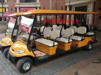

贵阳观光车减振器出故障的表现及原因：
电动旅游观光车前轮减振器异响的原因减振器的损坏会导致车辆行驶条件变得恶劣，若有损坏，在外部可看到有漏油的痕迹，同时会产生异响。它的响声特征是：车辆行驶在平坦路上，稍能听到车辆前部发出“咕、咕”声响，急转弯声响增加；当车辆在起伏不平路面上行驶时，声响加剧，车身发出连续振抖，随车速提高变得杂乱，降低车速仍不消失。此响声往往会误判到前桥其他部位上。停车检查时，用力按压车辆前部使其上下回弹，响声出现，用力越大，声响明显增大，同时感觉到无弹性，不柔和；响声严重时，打开车门在驾驶室内就能听到。电动旅游观光车前轮减振器发生故障的原因，主要是经常在恶劣道路上行驶，驾驶操作不当和行驶里程过长，漏油损坏等原因造成。排除此故障，一般应更换新件。
相关标签：贵阳观光车，